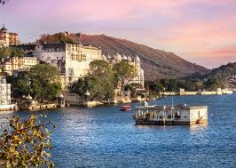
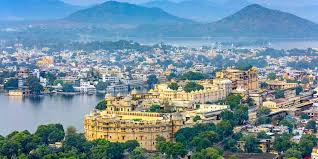
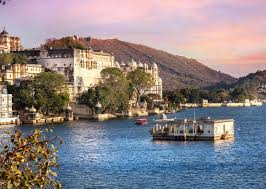
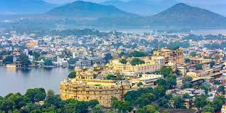
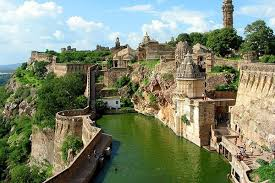
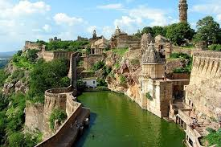

City Palace
Grand palace complex overlooking Lake Pichola with museums and courtyards.
Udaipur is known as the “City of Lakes” with palaces, ghats, rooftop cafes and beautiful sunset spots. The old town sits around Lake Pichola, offering views of palaces reflecting in calm water.
Famous attractions include City Palace, Jag Mandir, Gangaur Ghat and lakeside viewpoints. It is peaceful, walkable and ideal for a relaxed cultural trip.
Grand palace complex overlooking Lake Pichola with museums and courtyards.
Boat rides, ghats and palace views at golden hour.
Popular ghat for photos, quiet mornings and cultural events.
Calm lakeside road ideal for cycling, walks and street food.
Museum, royal chambers and sweeping views across Lake Pichola.
Classic Udaipur experience with palace reflections and soft light.
Narrow lanes, rooftop cafes, ghats and local artisan shops.
Simple heritage + lake experience.
Quick trip
Balanced
3–4 days
Best lake views, rooftop cafes and heritage atmosphere.
Ideal for couples and first-time visitors.
Quieter modern hotels near open-air food stalls and walking paths.
Good for families.
Budget-friendly with quick access to markets and transport.
Good for shopping-focused trips.


 



 

Transport, views and crowd timing.